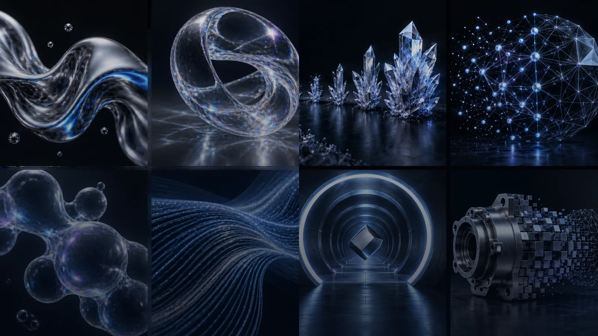

先找到词
用中英文、类别或日常描述搜索，快速定位脑海里的视觉感觉。

OPEN VISUAL VOCABULARY · 开放视觉词汇
面向 AI 图片、视频与工业视觉创作者的中英双语语言库。查找准确术语，理解视觉含义，复制可直接使用的提示词。
用中英文、类别或日常描述搜索，快速定位脑海里的视觉感觉。
每个词条都有大白话解释、常见搭配与视觉参考，减少术语门槛。
复制提示词示例，再替换主体、场景与动作，形成自己的画面指令。
BROWSE THE LIBRARY
所有内容都可搜索、复制和下载。词条与图片采用 CC BY 4.0，欢迎署名复用与共同完善。
MAKE THE VOCABULARY BETTER
如果这个词库让你更容易描述画面，欢迎在 GitHub 点一颗 Star，或提交缺失图片和新词条。